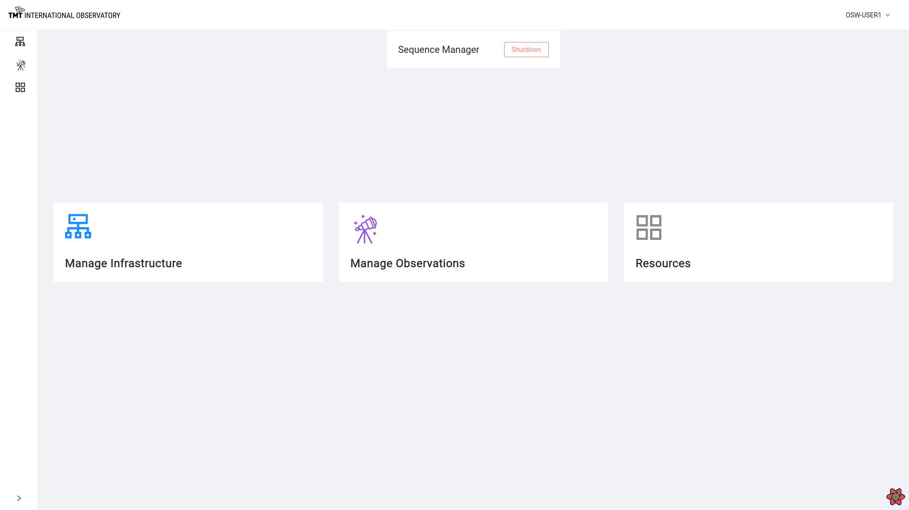

Login and Home Page
To use OCS-ENG-UI the user must log in to the system. The user interface is integrated with the CSW Authentication and Authorization Service, which keeps track of users and their security roles in the system.
Logging In
The below image shows a snapshot of the login screen :

To access the Engineering UI portal in this release version, a user should log in with roles and credentials as specified below.
Authentication and Authorization
OCS-ENG-UI is a proper UISTD user interface and requires the user be authenticated with the CSW Authentication and Authorization Service (AAS).
For testing purposes, we have created osw-user1, esw-user1 & tcs-user1 users while launching the AAS from csw-services.
For testing purposes, user-role osw-user1 can be used.
Username: osw-user1 Password: osw-user1
For authorized commands, the esw-user role is required.
Username: esw-user1 Password: esw-user1
You may add new users to AAS/KeyCloak following procedures in the CSW documentation. To operate OCS-ENG-UI properly the user must have the osw-user or esw-user roles.
Home Page
Once log in happens successfully, the user should be able to see the screen below:

Spawn/Shutdown the Sequence Manager
The top of this page shows a button to Spawn/Shutdown the Sequence Manager. Spawning means to startup the Sequence Manager.
If Sequence Manager is been spawned with agents (as with esw-services), then it shows the label ‘Shutdown’ for the Sequence Manager.

Sequence Manager may be started without the OCS-ENG-UI from its application, and the system will still work.
Clicking on ‘Shutdown’ button asks for confirmation before shutting down the Sequence Manager.
Once Sequence Manager is shutdown, the label changes to ‘Spawn’ and a message of successful shutdown is displayed.

After clicking on ‘Spawn’ button, select an Agent to run Sequence Manager on.
Clicking on one of the Agents, spawns Sequence Manager on that machine.